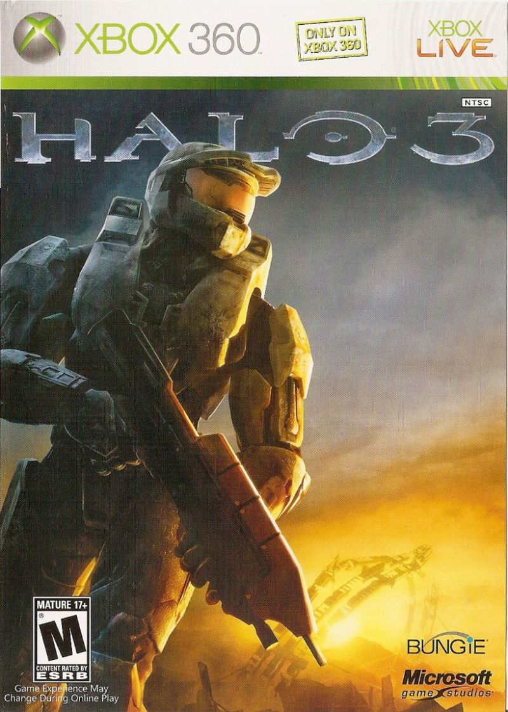
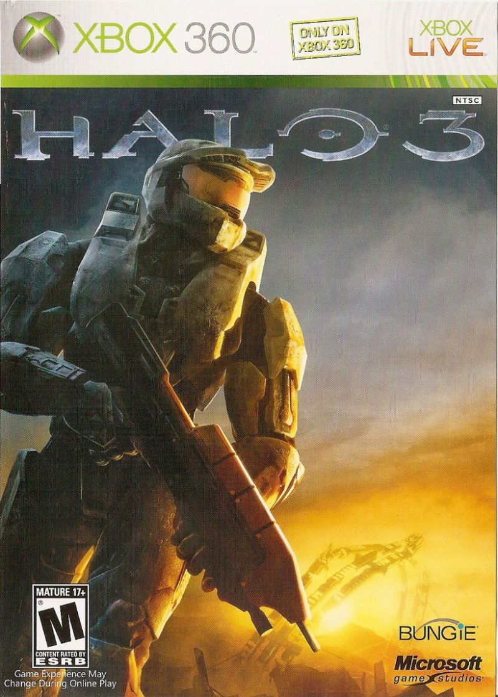

I was born in a semi-small town of Olatha, Kansas. I am the youngest of 3. So you could say that I had alot to look up to growing up. My father and my siblings would always be playing our N64. Out of anything from that house the only thing I remember is watching them play Mario Kart 64. then, when i was about 4, we moved to Washington, MO. I started Pre-School and my very first game, Pokemon: Leaf Green.
To this day i still love Mario, Pokemon and, many other video games. I would even go as far as to say that video games are integral to the person I am today. One Huge Example is my relationship with the Halo Series. When my brother got Halo: Combat Evolved. I watched him play the whole campaign It was a surreal experience. And i was dying to play myself. I was only in 2nd grade at the time so, I had to wait for my parents to see I could tell the difference betwen fantasy an reality. It was the summer after 3rd grade, I was 10 years old when i got m first rated: M game. Halo 3 for the Xbox 360. I probably spent the next 3 years stuck on that game. It was a game of its generation and many of my friends I played with at the time I am still very good friends with. Looking back now I see that Halo 3 was the reason I had friends throughout grade school. Without it I wouldnt have been able to relate with them over a shared love for such an amazing game.
 
